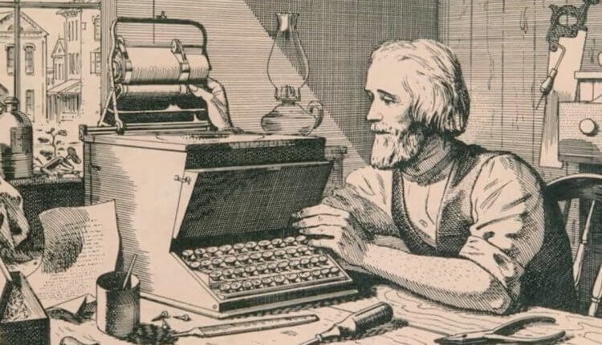

Клавиатуры
Клавиатура — это устройство ввода, предназначенное для взаимодействия с компьютерами, мобильными устройствами и другими электронными системами. Она представляет собой набор кнопок, или клавиш, каждая из которых выполняет определённую функцию. Большинство моделей поддерживают раскладки, адаптированные под конкретные языки и нужды пользователей.
Исторически клавиатуры произошли от пишущих машинок, а их раскладка QWERTY была разработана в XIX веке для минимизации механических проблем. С развитием технологий клавиатуры стали многофункциональными: добавились мультимедийные кнопки, RGB-подсветка и программируемые макросы. Сегодня они незаменимы как для работы, так и для развлечений, оставаясь важнейшим интерфейсом между человеком и техникой.
В 1868 году изобретатель Кристофер Шоулз запатентовал первую практическую пишущую машинку. Она стала основой для дальнейшего развития клавиатур. Чтобы избежать заедания рычагов при быстром наборе текста, Шоулз разработал раскладку клавиш QWERTY, которая используется до сих пор.
Виды клавиатур
Мембранная клавиатура — это один из наиболее популярных и доступных типов клавиатур, который широко используется в офисах, школах и для домашнего применения. Основой её работы являются гибкие мембраны, которые замыкают электрическую цепь при нажатии на клавишу. Такой механизм делает мембранные клавиатуры тихими, лёгкими и компактными. Однако из-за отсутствия чёткой тактильной обратной связи и сравнительно короткого срока службы они уступают механическим клавиатурам в плане комфорта и долговечности. Их преимущество заключается в доступной цене, лёгкости очистки и минимальном уровне шума, что делает их идеальными для повседневного использования.
Механическая клавиатура — это высококачественное устройство ввода, где каждая клавиша оснащена индивидуальным механическим переключателем. Такой механизм обеспечивает чёткую тактильную или звуковую обратную связь при нажатии, что делает набор текста и игровую производительность более комфортными и точными. Механические клавиатуры отличаются долговечностью — переключатели способны выдерживать десятки миллионов нажатий, значительно превышая ресурс мембранных аналогов. Пользователи могут выбирать переключатели в зависимости от своих предпочтений: линейные для плавного хода, тактильные для чёткой обратной связи или кликающие для характерного звука. Хотя такие клавиатуры дороже и могут быть шумными, их надёжность и настраиваемость делают их фаворитом среди геймеров, программистов и энтузиастов.
Оптическая клавиатура — это современный тип клавиатуры, где вместо механического контакта или мембраны для регистрации нажатия используются оптические датчики. Каждое нажатие клавиши прерывает инфракрасный луч или отражает световой сигнал, что фиксируется системой. Такая технология обеспечивает практически мгновенное срабатывание, что делает её особенно привлекательной для геймеров, которым важна скорость и точность ввода.

Свитчи для механических клавиатур

Линейные. Гладкий ход без ощутимой точки срабатывания.
Тактильные. Имеют чёткую тактильную точку срабатывания.

Кликающие. Имеют и тактильную точку, и характерный щелчок при срабатывании
Кейкапы
Самые популярные бренды

Logitech
Steelseries
HyperX
Razer